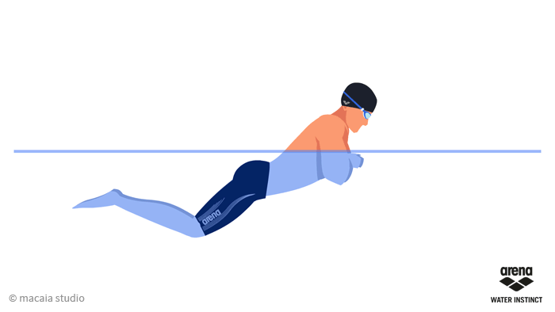
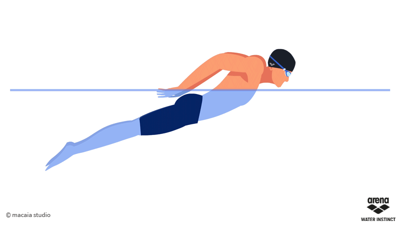

La natacion como deporte
Estilos
Crol o libre

El estilo crol nació en Australia, y a quien se le atribuyen sus movimientos característicos es al británico John Arthur Turdgen, que en 1780 imitaba la técnica de los oriundos australianos.
El estilo de natación de crol es también conocido como libre en las competiciones. Esto debido a que en las pruebas el nadador puede realizar cualquier estilo de nado, ya sea crol, braza, espalda, mariposa, de lado, perrito, etc., a excepción de las pruebas de individual estilo y relevo combinado, en las cuales estilo libre representa cualquier estilo diferente a espalda, braza o mariposa.
la hora de practicar el popular estilo crol, todo entrenador personal de natación tienen como objetivo conseguir que el nadador se halle en posición ventral, o sea boca abajo y se traslade realizando un movimiento de ambos brazos (conocido como brazada) de manera alternada, parecido al de las aspas de un molino, respire de manera lateral y que pueda dar una cantidad cambiante de batidos de pierna (conocido como patada). Por su rapidez, eficacia y comodidad el crol es la forma de nado más empleada hoy en día.
Braza
La braza o llamado también estilo pecho, es además, el más lento de todos los estilos representativos en la natación competidora.
En el estilo braza o pecho, el nadador se ubica en posición ventral y ejecuta movimientos sincrónicos y armoniosos de brazos y piernas. Aquí los hombros y las caderas efectúan un movimiento ascendente y descendente, sumado a la coordinación del movimiento de los brazos, lo cual permite efectuar la inspiración y se trabaja sobre la flexibilidad de los músculos.
Por otra parte, una característica más del estilo braza y que marca la diferencia con el resto de los estilos radica en el impulso, es decir la propulsión. Esto es que, tanto la brazada y la patada en este estilo aportan por igual un 50 % de importancia.
Mariposa
El estilo mariposa es el más reciente de los cuatro estilos que se conocen en la natación. Este estilo emerge como una variedad de la braza durante la década del 50.
El estilo de mariposa depende la posición que adopta el nadador, la ventral. Los movimientos tanto de piernas como de brazos son muy parecidos a los hechos en el estilo crol, con algunas variantes, de forma paralela.
Por otro lado, este estilo demanda una excelente coordinación entre extremidades superiores e inferiores. Además para mejorar la técnica de la natación, es importante que estas extremidades realizan un movimiento parecido al aleteo de los delfines, por ese motivo es que también se le conoce como “patada de delfín”. El estilo mariposa se ha convertido en uno de los más difíciles debido a que demanda costosos niveles tanto de fuerza como de coordinación. No debemos olvidarnos de otra característica que posee este estilo, el cual es, un movimiento ondeante permanente de todo el cuerpo, en forma de una “S”, el mismo que para lograr una mayor propulsión dentro del agua debe estar cabalmente coordinada con las piernas y los brazos.
Espalda

Dentro del deporte de la natación el estilo espalda es el tercero en cuanto a rapidez, muy próximo a la mariposa (segundo), y alejado de la braza que viene a ser el cuarto.
Es necesario mencionar que durante mucho tiempo a este estilo se le conoció e incluso en muchos textos continúa llamándosele “crol de espaldas”. Su característica principal es estar de espaldas teniendo un movimiento intercalado de brazos y piernas, además de un singular movimiento de hombros que se efectúa en todo el nado. A ese movimiento de las piernas en espalda se le conoce como batida de espalda o batida dorsal. El estilo espalda es el que más se recomienda a personas mayores o quienes tengan dificultades de espalda, cuello o columna.
©Pagina Web realizada por J.E.A.N.